Na ovoj stranici ću predstaviti svoj rad na kolegiju Digitalnij multimedij 1
U prvoj vježbi zadatk je bio dizjanirati vlastiti font, te njime ispisati vlastito ime i prezime. Moj izgleda ovako:
Vježba 1 PDFDruga vježba bila je uvod u Adobe Illustrator. Zadatak je bio napisati svoje ime i poigrati se sa krivuljama.
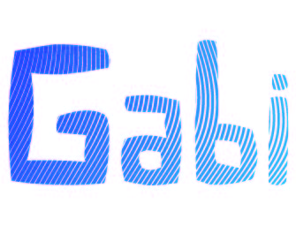Kod trećeg zadatka smo se bavili rekreiranjem slika i transformacijom, također u Illustratoru. Prva slika je bila zadana u zadatku, drugu (desnu) smo morali samo osmisliti i nacrtati.
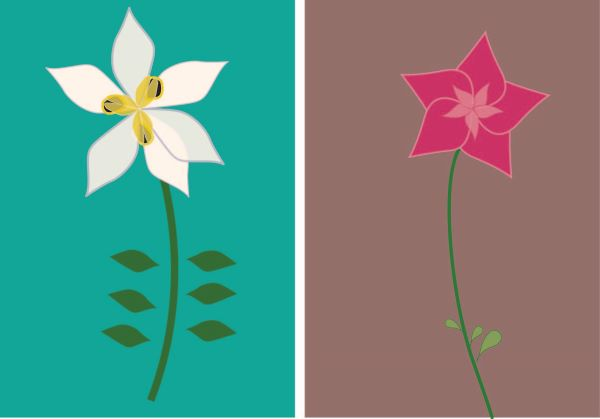Gradijenti i transparencija bili su tema četvrte vježbe. Kao i u prethodnoj vježbi jedan dio zadatka je zadan, dok u drugom dijelu koristimo vlastitu maštu.
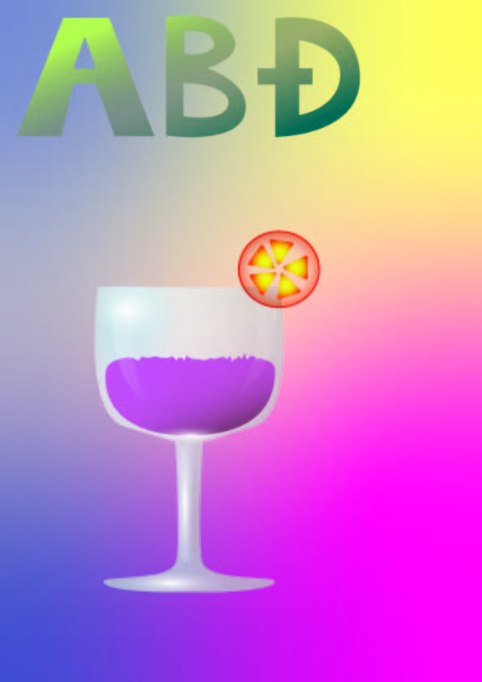 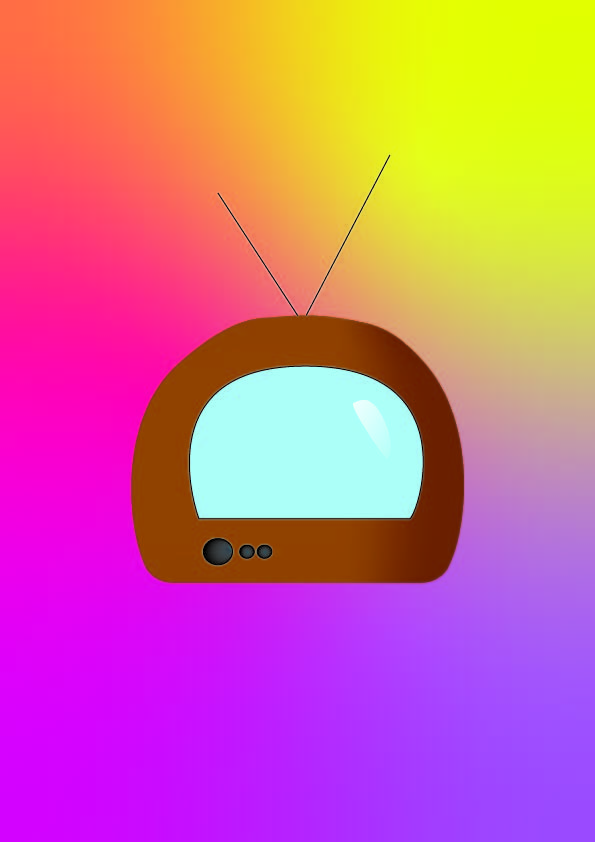U prvom projektnom zadatku trebalo je na temelju predloška rekreirati sliku u Illustratoru i uklopiti svoj font iz prve vježbe u fotografiju. Evo kako sam ja to uradila: 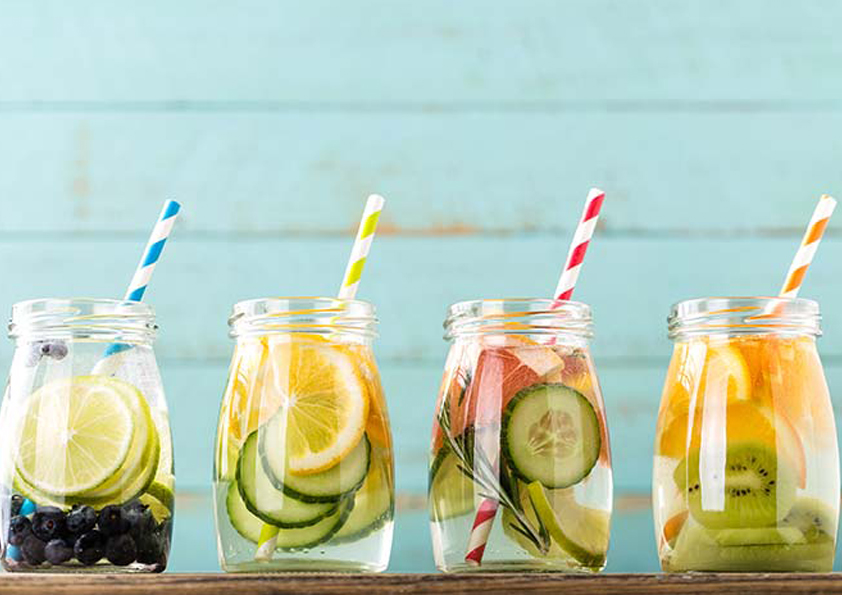 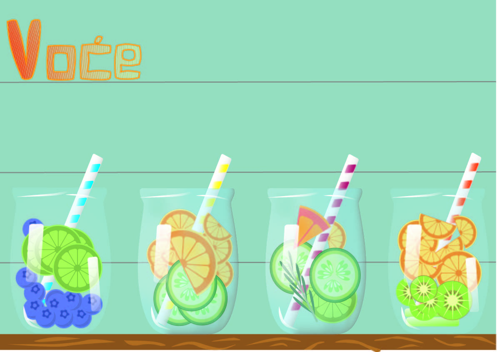
Piksel grafika je tema nove cjeline, a u petoj vježbi smo se bavili retuširanjem.
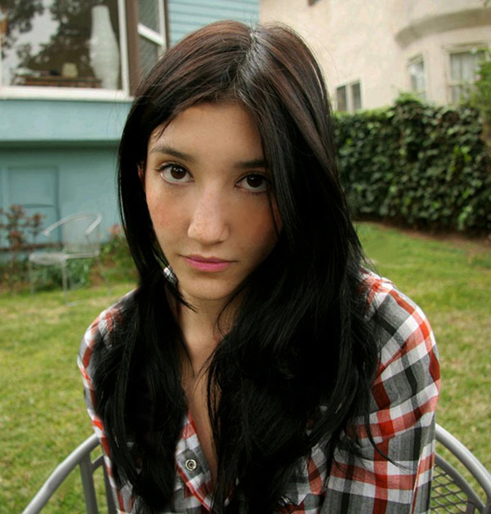 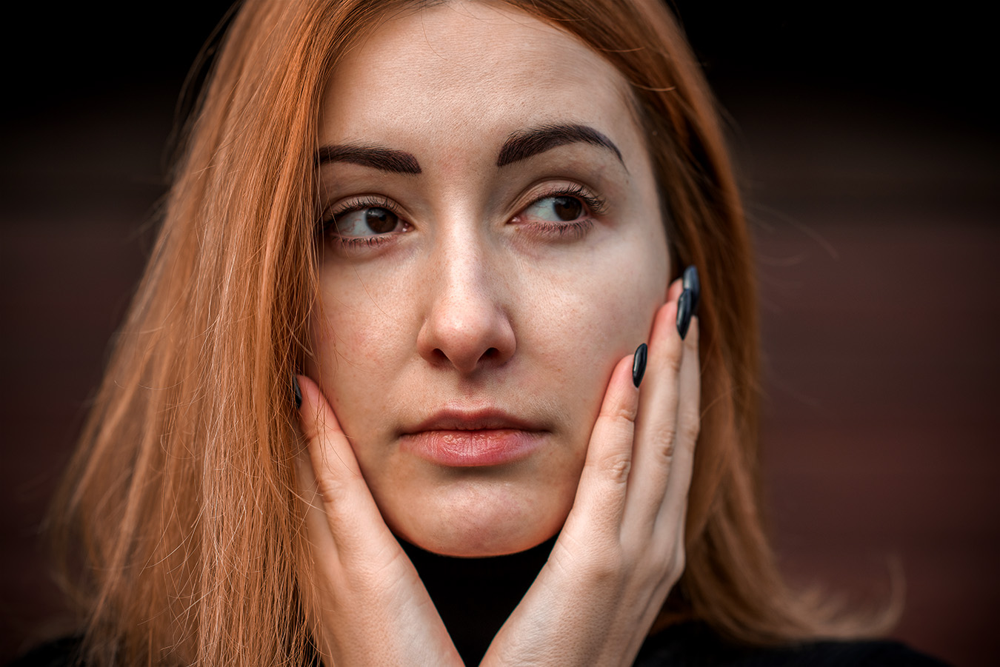Zadatak je bio vezan za koloriranje u šestoj vježbi. Prvi primjer zadan, u drugom smo trebali koristiti svoju fotografiju.
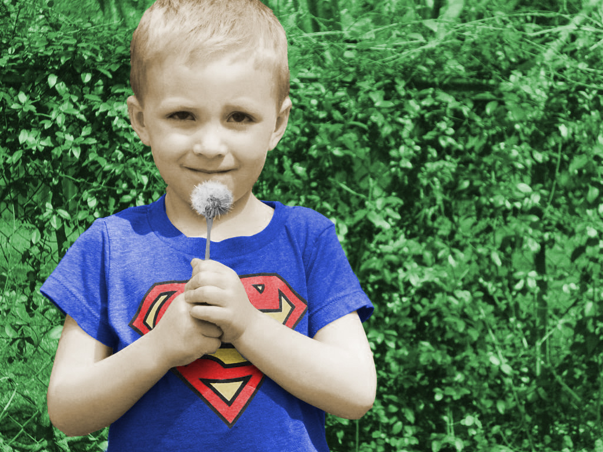 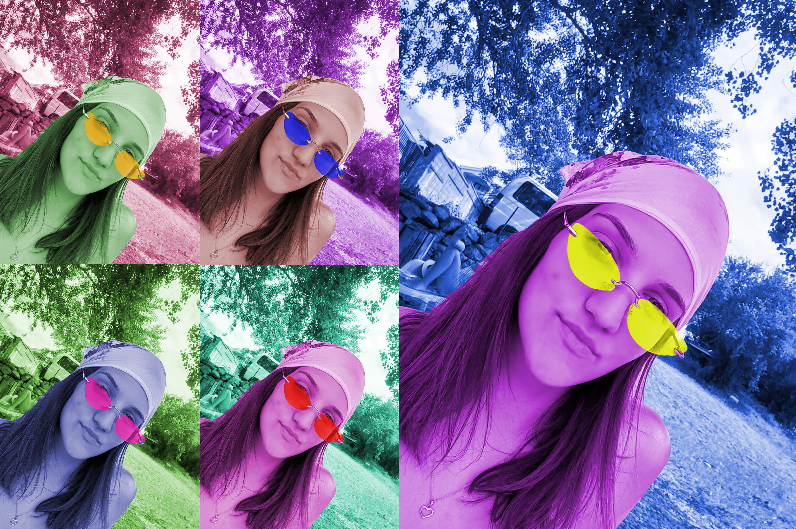Ostajemo u Adobe Photoshopu i tema je fotomontaža.
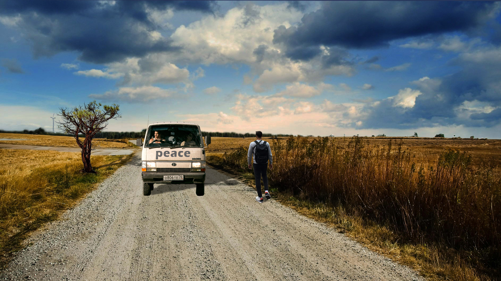Zadatak za drugi projektni rad bio je uklopiti sve naučene tehnike za piksel grafiku i fotomontažom dobiti sliku koja priča priču.
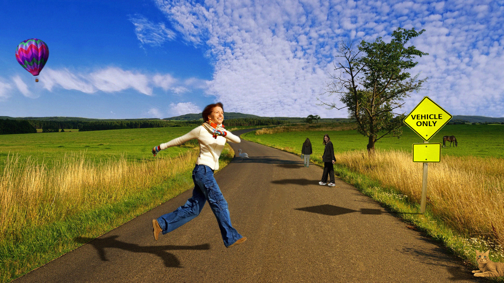Kod sedme vježbe počinjemo se baviti obradom videozapisa. Konkretnije izradom cinemagrafa. Prvi je dio zadatka zadan, drgi slobodan.


U devetoj vježbi bavimo se videomontažom.